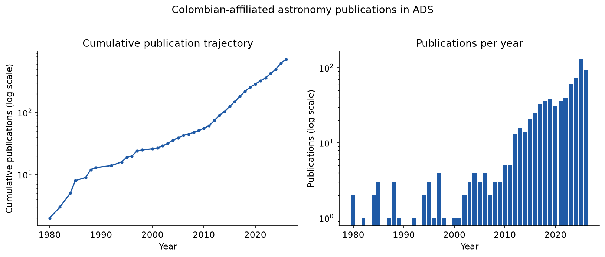
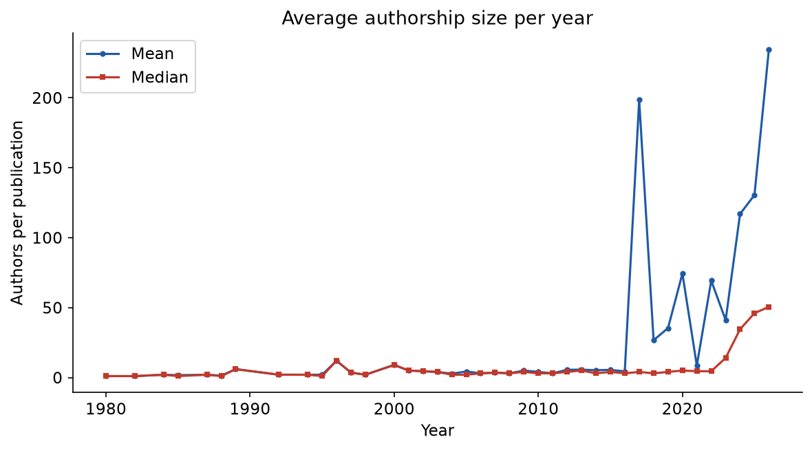
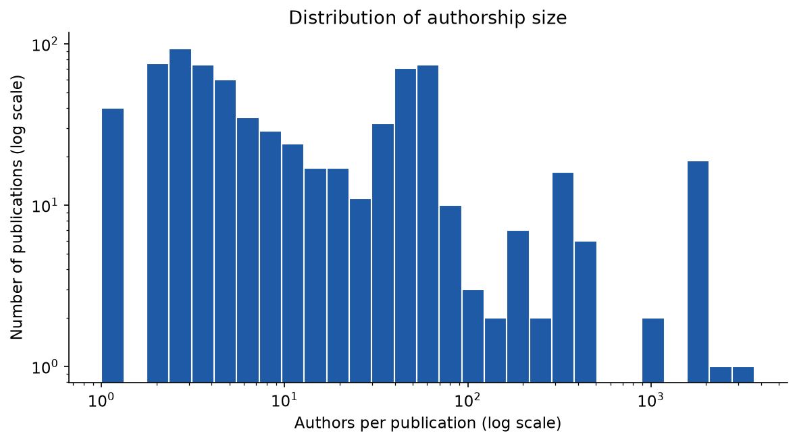
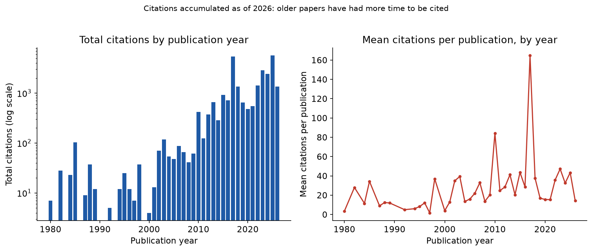
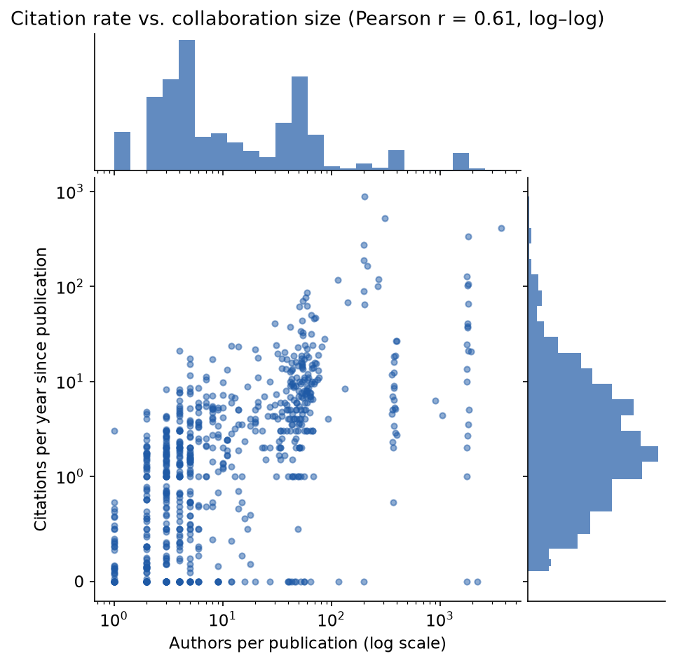
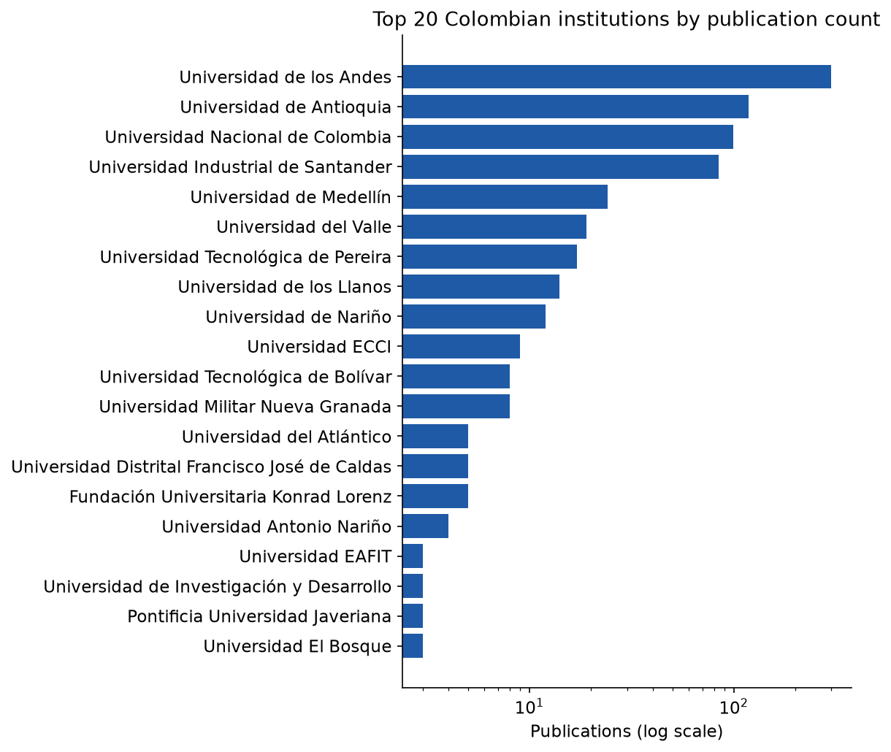
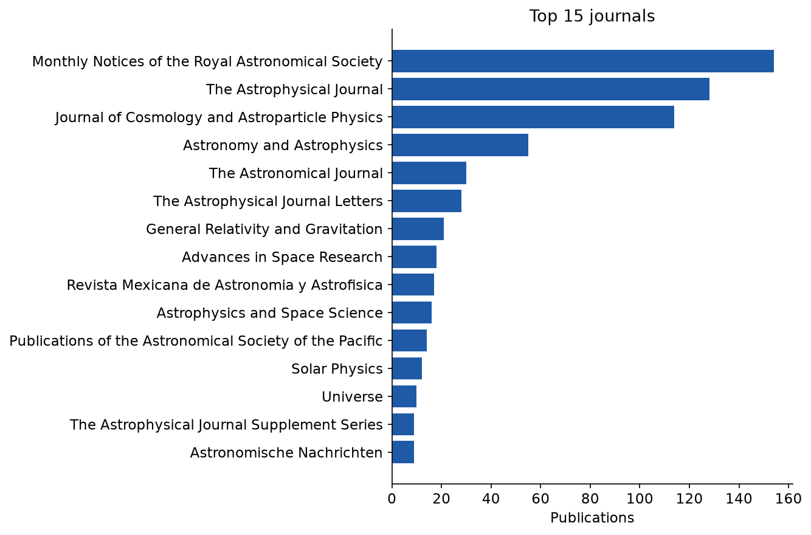
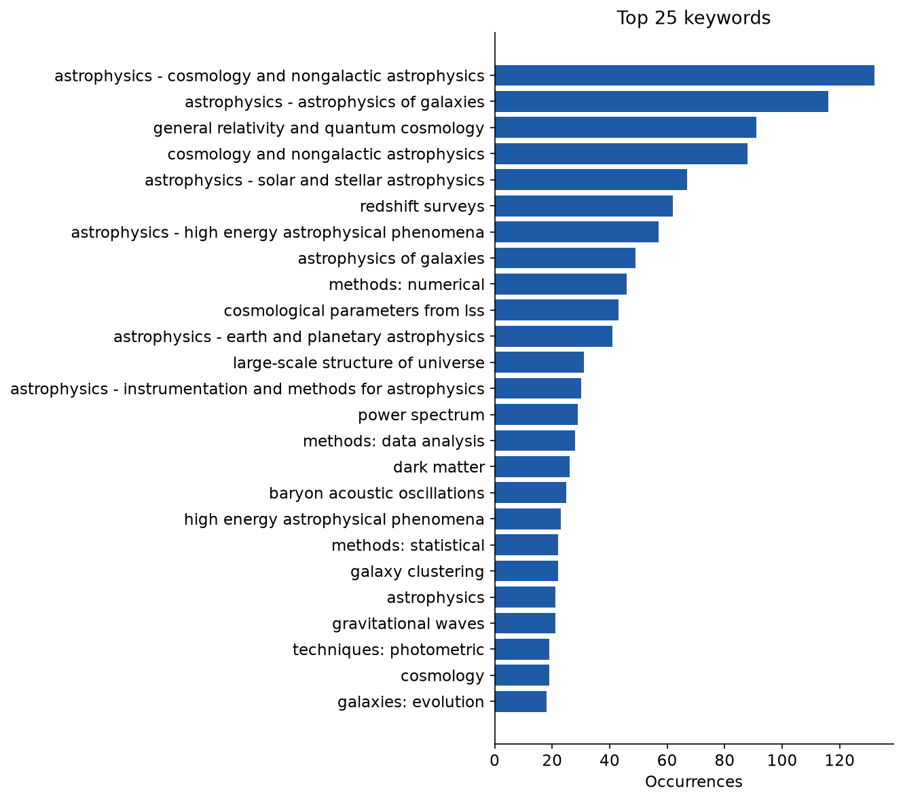

Alcance y Limitaciones
Esta nota actualiza las tendencias institucionales y de autoría reportadas en Forero‑Romero (2024) usando una exportación reciente de NASA ADS, pero es un instrumento más limitado que aquel artículo, construido sin Web of Science y sin un registro controlado de autores. Cinco limitaciones acotan cada figura y tabla a continuación.
- 01No existe un identificador de autor (ORCID) en esta exportación. Las variantes de nombre — “J. E.” frente a “Jaime E.”, divisiones inconsistentes de apellidos compuestos, errores tipográficos ocasionales en los metadatos — se fusionan mediante una heurística conservadora de apellido+iniciales. Aún así, puede separar o fusionar erróneamente a un puñado de personas.
- 02Los artículos de las colaboraciones más grandes — DESI, LIGO/Virgo/KAGRA, Pierre Auger — tienen listas de autores truncadas en 200 por esta plantilla de exportación de ADS. Las cifras de tamaño de autoría y de colaboración subestiman esos artículos, en algunos casos en un orden de magnitud.
- 03La atribución institucional es una coincidencia de subcadenas contra textos libres de afiliación, no una consulta controlada ROR/GRID. Cerca del 3% de las afiliaciones que mencionan a Colombia caen en una categoría “otra” sin clasificar, en vez de una institución identificada.
- 04Los conteos de citas son una única instantánea de ADS, no una serie temporal. “Citas por año” más abajo es el total de citas dividido por la edad del artículo — un indicador aproximado del impacto, no una curva de tasa de citación observada.
- 05Se excluye en todo el análisis un único registro de 2027 en prensa, por ser un grupo demasiado escaso para interpretar.
Nada de esto invalida la tendencia general: la producción astronómica con afiliación colombiana ha crecido cerca de dos órdenes de magnitud desde 1980, bajo cualquier conjunto razonable de decisiones metodológicas. Pero los datos puntuales — y en especial las instituciones más pequeñas, los conteos bajos de publicaciones, y cualquier cifra que involucre a las mega-colaboraciones — deben leerse como descriptivos, no como precisos.
Recopilamos 723 publicaciones de astronomía y astrofísica indexadas en el Astrophysics Data System de la NASA con al menos un autor de afiliación colombiana, entre 1980 y 2026. El conjunto de registros abarca 56 revistas y, tras la fusión heurística de nombres, cerca de 380 investigadores individuales en 33 instituciones identificadas, que en conjunto acumulan más de 26.500 citas y un índice h global de 65. Reportamos tendencias de crecimiento, efectos del tamaño de colaboración, patrones de citación, clasificaciones institucionales, y distribuciones por revista y por tema, siguiendo el enfoque descriptivo de Forero‑Romero (2024) en todo lo que los datos disponibles lo permiten. Universidad de los Andes, Universidad de Antioquia, Universidad Nacional de Colombia y Universidad Industrial de Santander siguen siendo los cuatro mayores contribuyentes — consistente con el hallazgo central del estudio anterior pese a tres años adicionales de datos y una base de datos fuente distinta.
Datos y Metodología
Se concatenaron y depuraron por bibcode dos exportaciones de ADS en formato personalizado — una amplia, otra más acotada — hasta obtener un conjunto único de 723 registros, sin solapamiento entre las dos consultas de origen. Una segunda plantilla de exportación de ADS, emparejada con la primera por posición de fila y verificada mediante comparación de títulos, aportó los conteos de citas que el formato etiquetado principal no incluye. Las instituciones se identificaron cotejando cada texto libre de afiliación contra una lista curada de nombres de universidades colombianas y sus formas normalizadas al inglés por ADS (por ejemplo, “National University of Colombia” para la Universidad Nacional); los nombres de autores se consolidaron mediante la heurística de apellido+iniciales descrita arriba. La metodología completa, el código del analizador y ambas exportaciones de origen están en el repositorio enlazado.
Crecimiento de la Producción
La producción acumulada ha crecido casi dos órdenes de magnitud desde 1980, con la aceleración más marcada desde inicios de la década de 2010 en adelante — consistente con la “fase de consolidación” que Forero‑Romero (2024) ubica entre 2010 y 2019. Ambos paneles a continuación usan un eje logarítmico; en escala lineal, las primeras tres décadas se comprimen en una línea indistinguible en la parte inferior de la gráfica.

Tamaño de Colaboración
El número promedio de autores por artículo se mantuvo bajo y estable — típicamente por debajo de diez — hasta 2016, cuando aumenta bruscamente. Ese cambio se explica casi por completo por un puñado de grupos colombianos que se unieron a grandes colaboraciones internacionales: DESI, LIGO/Virgo/KAGRA y el Observatorio Pierre Auger. La limitación 02 aplica directamente aquí: como las listas de autores de esas colaboraciones están truncadas en 200 en esta exportación, el promedio real posterior a 2016 está subestimado, no sobreestimado.


Citas
El total de citas por año de publicación refleja el crecimiento en la producción, agravado por el hecho de que los artículos más antiguos simplemente han tenido más tiempo para acumular citas (limitación 04). Las citas promedio por publicación son más ruidosas pero muestran una tendencia al alza, marcada por unos pocos artículos con citación excepcional — el más visible, el descubrimiento multimensajero de la fusión de estrellas de neutrones de 2017.

La tasa de citación — citas divididas por los años transcurridos desde la publicación, un control aproximado de la edad del artículo — correlaciona con el tamaño de colaboración con un coeficiente de Pearson r = 0,63 en espacio log–log: las listas de autores más grandes tienden a estar en artículos más citados, lo cual no sorprende dado que varias de las mayores colaboraciones (DESI, LIGO) están también entre los campos más citados del conjunto de datos.

Instituciones
Cuatro instituciones concentran la gran mayoría de la producción atribuida institucionalmente: Universidad de los Andes, Universidad de Antioquia, Universidad Nacional de Colombia y Universidad Industrial de Santander — las mismas cuatro que encabezaban la clasificación de Forero‑Romero (2024) hace tres años, ahora acompañadas de una cola más larga de contribuyentes menores. Como el rango abarca casi dos órdenes de magnitud, la gráfica a continuación usa un eje logarítmico.

| Institución | Pubs. | Autores | Citas | h | Activa desde |
|---|---|---|---|---|---|
| Universidad de los Andes | 298 | 66 | 12.603 | 47 | 1980 |
| Universidad de Antioquia | 99 | 71 | 2.098 | 22 | 2005 |
| Universidad Nacional de Colombia | 98 | 90 | 1.313 | 19 | 1980 |
| Universidad Industrial de Santander | 67 | 38 | 1.950 | 21 | 2006 |
| Universidad del Valle | 19 | 16 | 220 | 8 | 2012 |
| Universidad Tecnológica de Pereira | 17 | 12 | 112 | 5 | 1997 |
| Universidad de los Llanos | 14 | 1 | 42 | 4 | 2018 |
| Universidad de Nariño | 12 | 5 | 187 | 7 | 2015 |
| Universidad ECCI | 9 | 6 | 363 | 5 | 2017 |
| Universidad Tecnológica de Bolívar | 8 | 6 | 34 | 3 | 2022 |
Revistas y Temas
Monthly Notices of the Royal Astronomical Society, The Astrophysical Journal y el Journal of Cosmology and Astroparticle Physics concentran juntas más de la mitad de toda la producción — esta última impulsada en buena parte por artículos de la colaboración DESI. La frecuencia de palabras clave, tomada de las etiquetas temáticas asignadas por ADS, muestra que el centro de masa del campo se ubica claramente en cosmología y astrofísica extragaláctica, con física solar/estelar y fenómenos de alta energía como el siguiente nivel.


Trabajos Más Citados
El artículo individual más citado con un autor colombiano — por un margen amplio — es el descubrimiento multimensajero de LIGO/Virgo de 2017 sobre la fusión de un sistema binario de estrellas de neutrones, con 4.140 citas. Ocho de los nueve puestos restantes del top 10 pertenecen a artículos de la colaboración DESI de 2022–2026, consecuencia directa de la reciente incorporación de grupos colombianos a ese proyecto.
| Título | Año | Citas | Autores |
|---|---|---|---|
| Multi-messenger Observations of a Binary Neutron Star Merger | 2017 | 4.140 | 200 |
| DESI 2024 VI: cosmological constraints from baryon acoustic oscillations | 2025 | 1.766 | 200 |
| Overview of the Instrumentation for the Dark Energy Spectroscopic Instrument | 2022 | 591 | 200 |
| DESI 2024 III: baryon acoustic oscillations from galaxies and quasars | 2025 | 544 | 198 |
| Data Release 1 of the Dark Energy Spectroscopic Instrument | 2026 | 520 | 200 |
| The NANOGrav 15 yr Data Set: Constraints on SMBH Binaries from the GW Background | 2023 | 467 | 115 |
| DESI 2024 IV: Baryon Acoustic Oscillations from the Lyman-α forest | 2025 | 380 | 199 |
| Tracing the cosmic web | 2018 | 364 | 30 |
| The DESI Bright Galaxy Survey: Final Target Selection, Design, and Validation | 2023 | 346 | 60 |
| New horizons for fundamental physics with LISA | 2022 | 341 | 141 |
Los conteos de autores de 200 marcan el truncamiento de la exportación descrito en la limitación 02, no necesariamente el tamaño real de la colaboración — varios de estos artículos tienen en realidad listas de autores del orden de los miles.
Disponibilidad de Datos y Código
Todas las exportaciones de origen, el flujo de análisis y procesamiento, y cada figura y tabla anteriores están publicados bajo licencia MIT.
- Repositorio
- github.com/forero/colombia-astronomy-bibliometrics
- Datos de origen
- Exportaciones de NASA ADS en formato personalizado, consultadas en 2026
- Trabajo previo
- Forero‑Romero, J. E. (2024). “Astronomy in Colombia: a bibliometric perspective.” arXiv:2403.02255